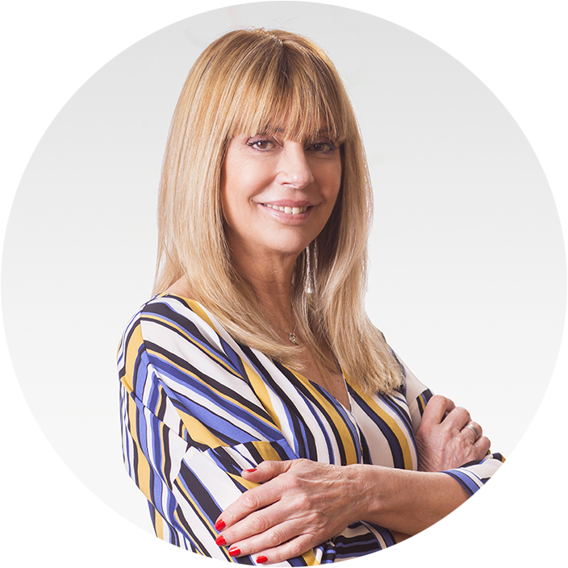

-

Silvia Baro
Socia Fundadora
Emprendedora, con 9 años de experiencia en una organización internacional. Formada en intervenciones y terapias asistidas con animales, con experiencia en area de salud. Enfocada en el abordaje de nuevos desafíos que presenta el mundo actual a través del pensamiento sistémico, inteligencia emocional y elaboración de un plan de metas personal para mejorar las relaciones y consolidar habilidades. Coach Ontológica Técnico Superior en Coaching Ontológico Escuela ICP. Instituto de Capacitación Profesional ICP avalado por la International Coaching Federation (ICF)
-

Edith Demb
Socia Fundadora
Lic en Psicopedagogía. Psicoanalista. Coach Ontológica Trabajó durante 20 años en terapias individuales, familiares y de equipo. Enfocada en acompañar al Cliente y equipos de trabajo en sus desarrollos y transformaciones para el logro de objetivos mediante procesos breves con resultados extraordinarios. Coach Ontológica Técnico Superior en Coaching Ontológico Escuela ICP Instituto de Capacitación Profesional ICP avalado por la International Coaching Federation (ICF)
-

Marcela Rubacha
Socia Fundadora
Magister en Sistemas de Salud (tesis en proceso), kinesióloga y profesora de Ed. Física. Con experiencia como Asesora Legislativa en el Gob de la Ciudad de Buenos Aires Como Coach ontológica su desafío es acompañar al coachee y a sus equipos de trabajo a alcanzar los resultados que desean lograr, aprendiendo a cambiar sus conversaciones tanto sobre si mismos como con el mundo con el que interactúan. Coach Ontológica Escuela ICP Instituto de Capacitación Profesional ICP avalado por la International Coaching Federation (ICF)
-
Gabriela Lindhart
Socia Fundadora
Ing. en Sistemas de información. Se desempeñó en desarrollo de sistemas durante 10 años en Accenture para clientes como Banco Galicia, YPF y Banco Patagonia. A través de procesos de coaching su propósito es agregar valor a individuos y organizaciones en la adquisición de competencias conversacionales, liderazgo, trabajo en equipo, definición de visión, misión y cultura organizacional. Coach Ontológico Técnico Superior en Coaching Ontológico Escuela ICP Instituto de Capacitación Profesional ICP avalado por la International Coaching Federation (ICF)